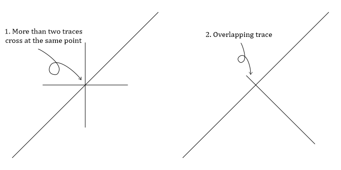
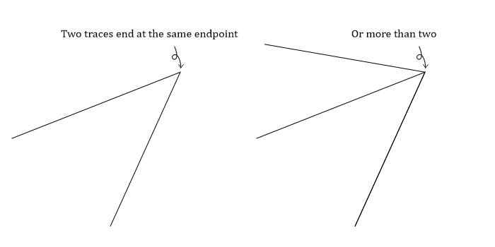
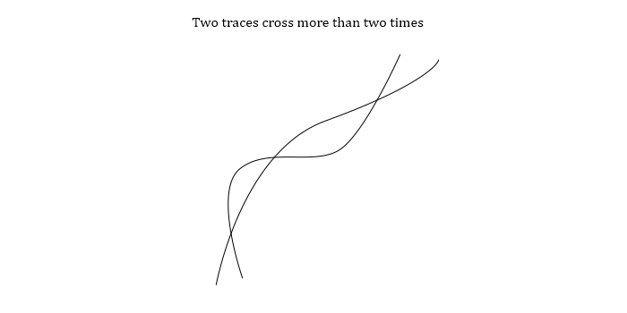
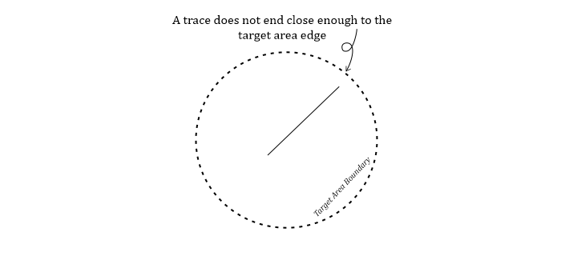
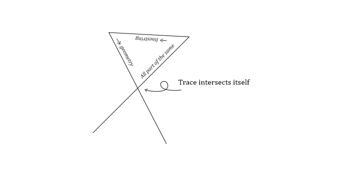
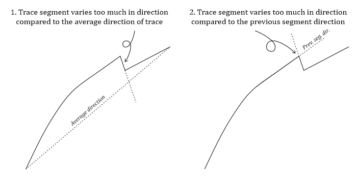

Reference¶
The error string is put into the error column of the validated trace data. Each error string is explained below. Possible automatic fixing is indicated by the checkmarks:
No automatic fixing:
* [ ] Automatic fix
Some cases can be automatically fixed:
* [o] Automatic fix
All cases can be automatically fixed:
* [X] Automatic fix
GeomTypeValidator¶
The error string is:
"GEOM TYPE MULTILINESTRING"
The error is caused by the geometry type which is wrong: MultiLineString instead of LineString.
MultiLineString can consist of multiple LineStrings i.e. a MultiLineString can consist of disjointed traces. A LineString only consists of a single continuous trace.
* [o] Automatic fix:
* Mergeable MultiLineStrings
* MultiLineStrings with a single LineString
Most of the time MultiLineStrings are created instead of LineStrings by the GIS-software and the MultiLineStrings actually only consist of a single LineString and conversion from a MultiLineString with a single LineString can be done automatically. If the MultiLineString does consist of multiple LineStrings they can be automatically merged if they are not disjointed i.e. the contained LineStrings join together into a single LineString. If they cannot be automatically merged no automatic fix is performed and the error is kept in the error column and the user should fix the issue.
MultiJunctionValidator¶
The error string is:
"MULTI JUNCTION"
Two error types can occur in digitization resulting in this error string:
More than two traces must not cross in the same point or too close to the same point.
An overlapping Y-node i.e. a trace overlaps the trace it “is supposed” to end at too much.

* [ ] Automatic fix
Fix the error manually by making sure neither of the above rules are broken.
VNodeValidator¶
The error string is:
"V NODE"
Two traces end at the same point or close enough to be interpreted as the same endpoint.

* [ ] Automatic fix
Fix by making sure two traces never end too near to each other.
MultipleCrosscutValidator¶
The error string is:
"MULTIPLE CROSSCUTS"
Two traces cross each other more than two times i.e. they have geometrically more than two common coordinate points.

* [ ] Automatic fix
Fix by decreasing the number of crosses to a maximum of two between two traces.
UnderlappingSnapValidator¶
The error string is:
"UNDERLAPPING SNAP"
A trace ends very close to another trace but not near enough. The abutting might not be registered as a Y-node.

* [ ] Automatic fix
Fix by more accurately snapping the trace to the other trace.
TargetAreaSnapValidator¶
The error string is:
"TRACE UNDERLAPS TARGET AREA"
A trace ends very close to the edge of the target area but not close enough. The abutting might not be registered as a E-node i.e. a trace endpoint that ends at the target area. E-nodes indicate that the trace length is undetermined.

* [ ] Automatic fix
Fix by extending the trace over the target area. The analyses typically crop the traces to the target area so there’s very little reason not to always extend over the target area edge.
GeomNullValidator¶
UNDER DEVELOPMENT¶
No error string because the error is automatically handled. A Null geometry means that a row in a GeoDataFrame contains no geometry.
These rows are subsequently removed. This will change in the future to avoid loss of data.
* [X] Automatic fix
StackedTracesValidator¶
The error string is:
"STACKED TRACES"
Two (or more) traces are stacked partially or completely on top of each other. Also finds cases in which two traces form a very small triangle intersection
* [ ] Automatic fix
Fix by traces do not stack or intersect in a way to create extremely small triangles.
SimpleGeometryValidator¶
The error string is:
"CUTS ITSELF"
A trace intersects itself.

* [ ] Automatic fix
Fix by removing self-intersections.
EmptyGeometryValidator¶
The error string is:
"IS EMPTY"
A GeoDataFrame row contains a geometry but that geometry is empty.
* [ ] Automatic fix
To make sure new geometry is properly created delete the row and make a new geometry. The needed action might depend on the GIS-software of choice, safest way is always to delete the erroneous row and make a new one as replacement.
SharpCornerValidator¶
UNDER DEVELOPMENT¶
The error string is:
"SHARP TURNS"
A lineament or fracture trace should not make erratic turns and the trace should be sublinear. The exact limit on of what is erratic and what is not is completely open to interpretation and therefore the resulting errors are subjective. But if a segment of a trace has a direction change of over 180 degrees compared to the previous there’s probably no natural way for a natural bedrock structure to do that.

* [ ] Automatic fix
Fix by making less sharp turns and making sure the trace is sublinear.